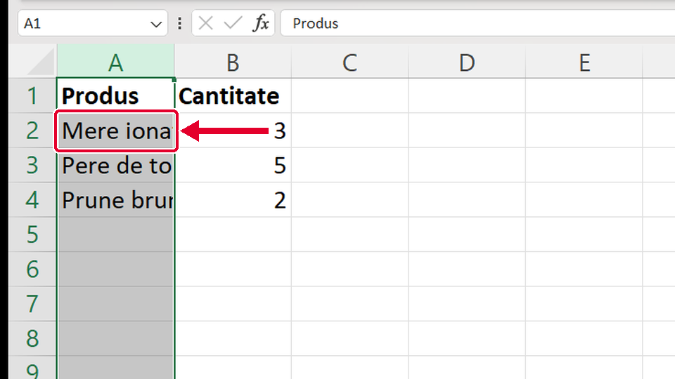
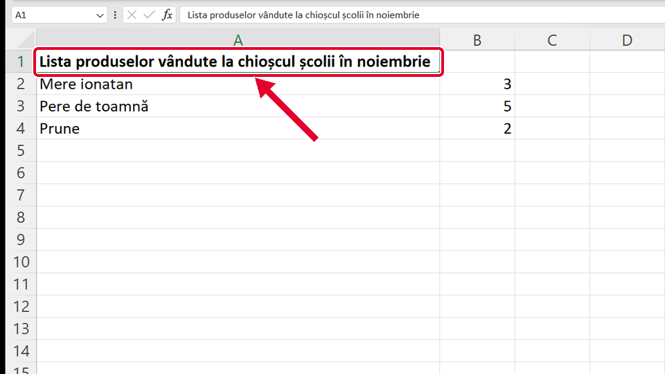
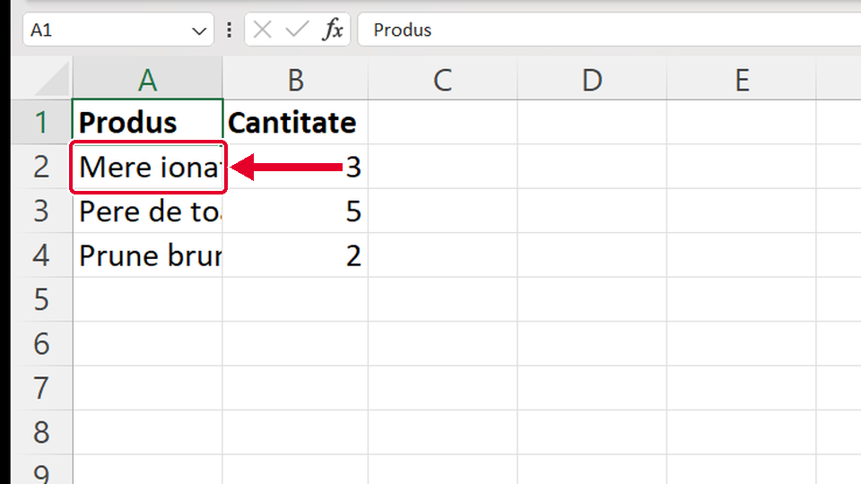

Început
Lățimea potrivită automat
Taste: Spațiu = pauză / continuă · ← și → = pasul anterior / următor. Poți apăsa și pe film.

Legat de asta
Se deschid într-o filă nouă, ca să nu pierzi filmul de aici.
- ÎnainteCum lărgești o coloană ↗
Lărgești coloana trăgând de aceeași linie, cât vrei tu.
- ApoiScris îngroșat cu Ctrl+B ↗
Scrii capul de tabel îngroșat cu Ctrl+B.
Dacă nu-ți iese
Alege ce vezi pe ecran.
S-a colorat toată coloana A, dar lățimea nu s-a schimbat.

De ce: Ai dat clic pe litera A, nu pe linia de lângă ea, sau cele două clicuri au fost prea rare. Un clic pe literă selectează toată coloana.
Ce faci:
- Muți mouse-ul încet spre dreapta, pe linia dintre A și B, până cursorul devine săgeată dublă ↔.
- Abia atunci dai două clicuri repezi.
După dublu-clic, coloana A s-a făcut foarte lată.

De ce: Dublu-clicul potrivește coloana după CEL MAI LUNG text din ea. Aici e titlul lung din A1.
Ce faci:
- Tragi linia dintre A și B înapoi spre stânga, până se văd întregi numele de dedesubt.
- Titlul din A1 se vede și așa: când celulele din dreapta lui sunt goale, textul trece peste ele.
Ai dat dublu-clic, dar numele din coloana A sunt tot tăiate.

De ce: Ai dat dublu-clic pe linia dintre B și C, deci s-a potrivit coloana B, nu A.
Ce faci:
- Duci mouse-ul pe linia dintre A și B (lângă litera A), până devine săgeată dublă ↔.
- Dai acolo dublu-clic.